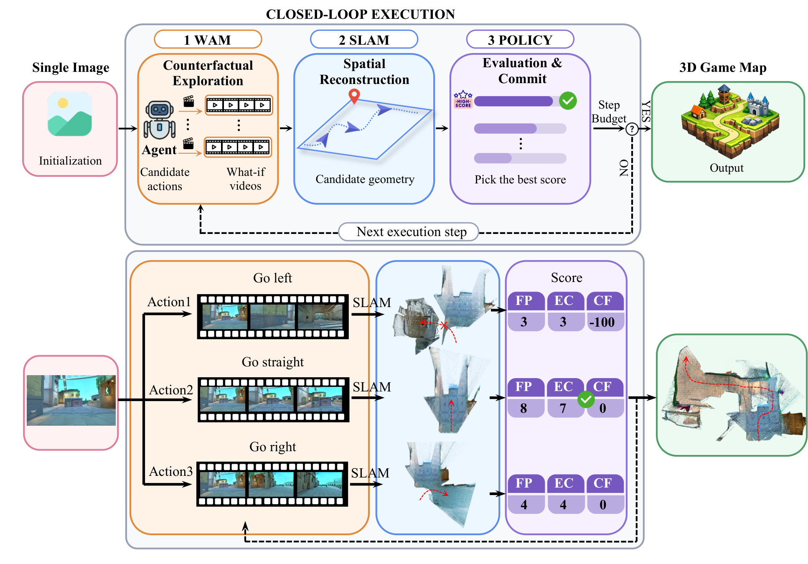
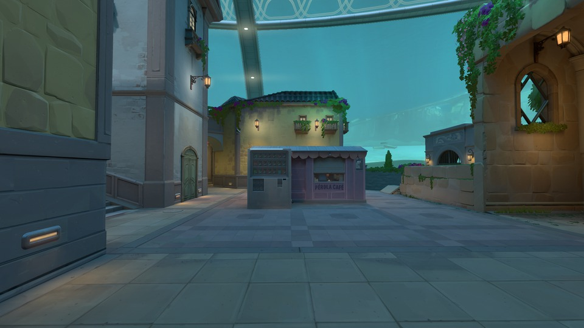
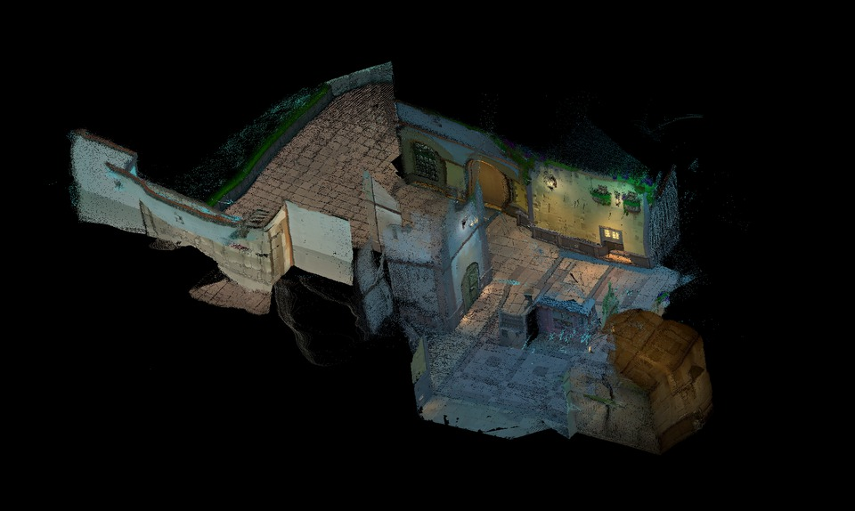
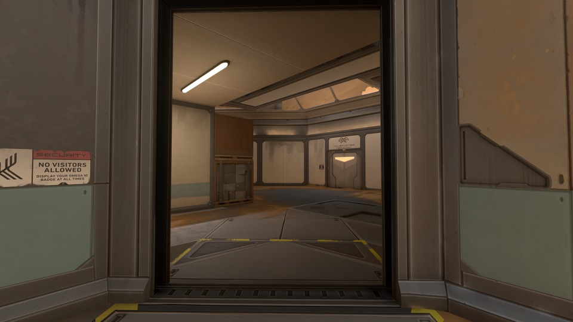
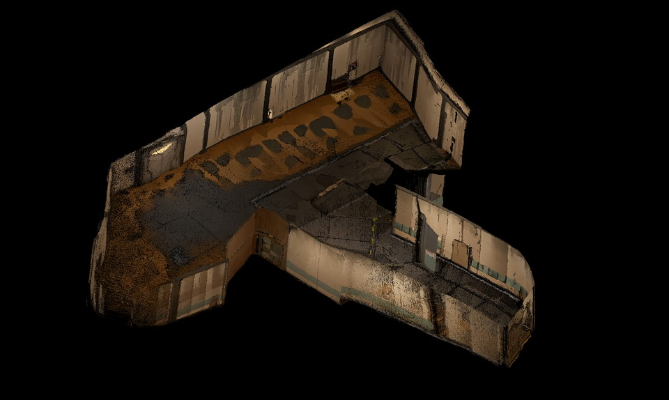
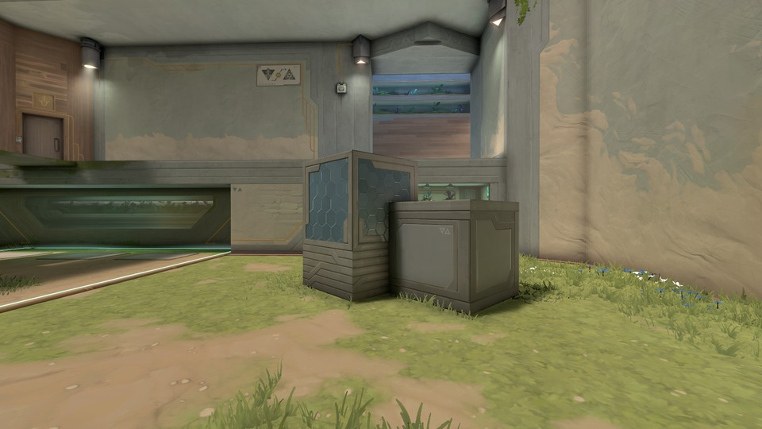
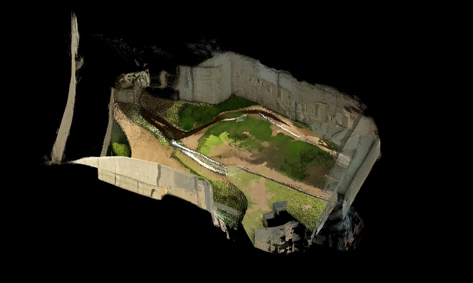

Definitions and Formalism

Conceptual definition and comparison of VLA, WM, and WAM. Figure from Awesome-WAM.
Conceptual definition and comparison of VLA, WM, and WAM. Figure from Awesome-WAM.

Overview of VALERANT. Starting from a single input image, a virtual agent queries the WM with candidate actions to generate alternative what-if video rollouts. Visual SLAM reconstructs the corresponding 3D geometry, and an exploration policy selects the branch with the highest mapping utility. The selected observations are committed to a persistent point-cloud map, which is iteratively expanded into the final 3D game map. The upper panel provides a schematic illustration of the pipeline, while the lower panel demonstrates the process using an example scene.
Each row is one VALORANT map. From the single input frame on the left, VALERANT explores the scene and produces the exploration video and the reconstructed point-cloud map beside it.






If you find our work helpful, please consider citing us:
@article{qiao2026structured,
title={Structured {3D} Latents Are Surprisingly Powerful: Unleashing Generalizable Style with {2D} Diffusion},
author={Qiao, Yiran and Lu, Yiren and Zhou, Yunlai and Liu, Disheng and Hou, Linlin and Yang, Rui and Yin, Yu and Ma, Jing},
journal={arXiv preprint arXiv:2605.04412},
year={2026}
}